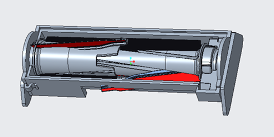
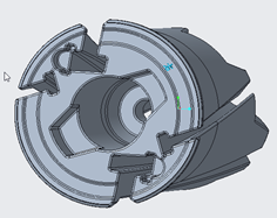
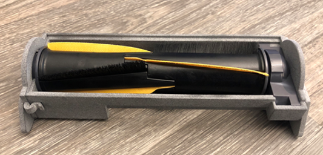
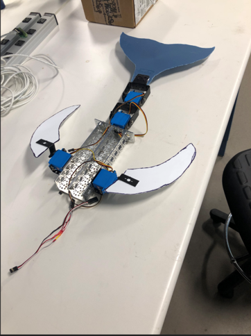
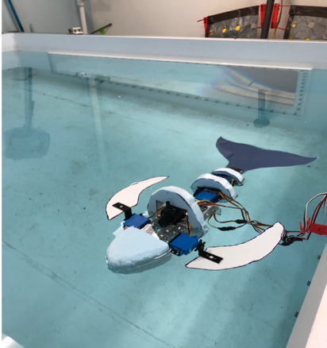

Employment Information, Internships
In the Summer of 2021, I interned at Shark-Ninja, as a member of its robotic development team. While there, I focused my work on the MESA Robots (Shark RV1001AE IQ Robot Self-Empty XL), where I was tasked with optimizing brushroll geometries to improve pet hair pickup on various surfaces.
 Additionally, I designed a variety of testing apparatus, brush-roll enclosures to maintain consistent brushroll contact with the ground as well as manipulate it for testing purposes. The majority of our rapid prototyping was done with Creo, and parts were manufactured using 3D Printers and a manual mill.
 Our team optimized bristle and flap floor contact angles to maximize pickup performance and reduce hair wrap.
Furthermore, I designed a Novel Side Brush actuated by the robotic vaccuum's foward motion along the ground. Given that the side brushes on the robot dictated its corner cleaning performance, we aimed to minimize friction effects while maintaining cleaning performance. In an effort to reduce costs, and generate a unpowered corner cleaning solution, we explored a variety of strategies. In our 2nd iteration, our wheel diameter was doubled to improve traction and performance on thick carpet. Additionally, a 2:1 gear ratio was added to prevent wheel overlap. Side Brushes were also moved to the bottom, to the reduce the effects of a raised chassis and weight imbalances. Mockups can be seen below:
Beginning in Fall of 2019, I've worked as a Learning Assistant for 6.a01. While there, I instructed other Undergraduate students in the construciton of a computer controlled brushless motor. The motor, which is composed of laser-cut acrylic parts designed in Fusion, hall effect sensors used to determine rotor position, and a teensyduino, taught students basic manufacturing techniques and strategies.
 In the Fall of 2018, in 6.a01 FISHBOT's I created and constructed an underwater whale shaped Remotely Operated Vehicle (ROV). Waterproof servos were used to provide thrust and mimic the undualting swimming motion commonly seen whales and dolphins.

In the Fall of 2018, while taking 6.a01 FISHBOTs, I created and constructed an underwater whale shaped Remotely Operated Vehicle (ROV). Waterproof servos were used to provide thrust and mimic the undualting swimming motion commonly seen whales and dolphins.